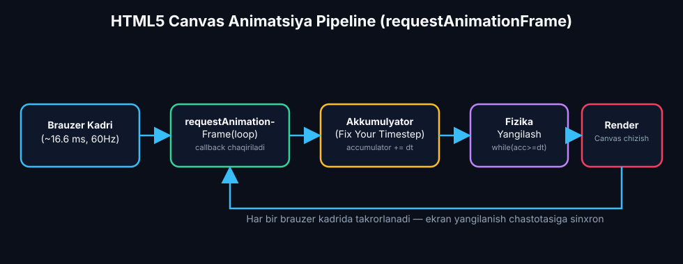
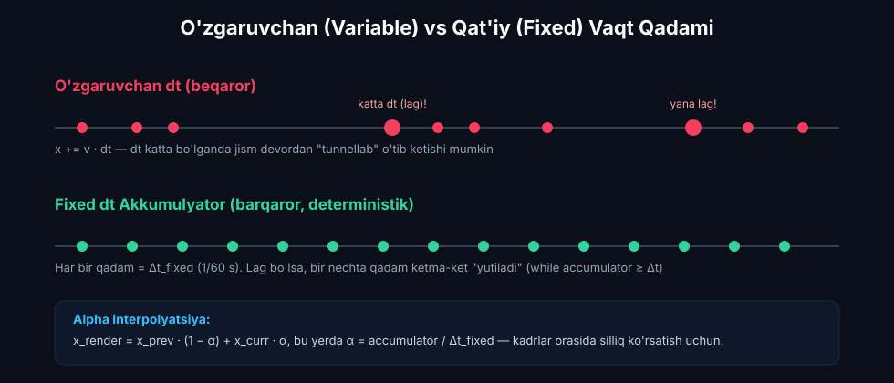
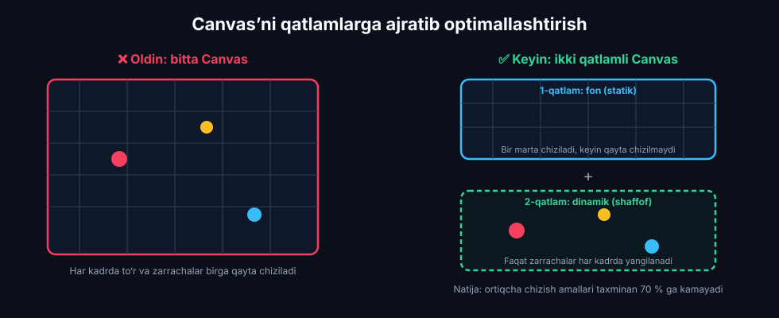
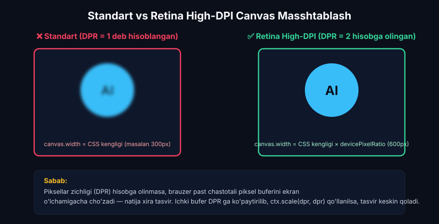

Fizik animatsiya arxitekturasi: HTML5 Canvas asoslari
HTML5 Canvas 2D konteksti, Glenn Fiedlerning "Fix Your Timestep" akkumulyatorli fizik tsikli, requestAnimationFrame apparat sinxronizatsiyasi, Google Antigravity monitoringi, ChatGPT kadr optimizatsiyasi (Dirty Rects, Multi-layer Canvas, Object Pooling) va Claude (Artifacts) vizual sinovlari.
1📋 7-ma’ruza rejasi va AI texnologik konveyeri
MagicSchool AI: ZPD va Bloom taksonomiyasi bo‘yicha 3 klasterli adaptiv grafik o‘quv rejasi.
Google Antigravity: Modulli dasturiy arxitektura, xotira (Heap) va kadr pacing monitoringi.
Claude: Glenn Fiedler akkumulyatori, qat’iy qadam (Fixed dt) va alpha interpolyatsiyasi.
ChatGPT Code Interpreter: Dirty Rectangles, ko‘p qatlamli Canvas va Object Pooling (Zero-GC).
Claude (Artifacts): Retina High-DPI dpr masshtablash, real vaqtli FPS va jank telemetriyasi.
HTML5 Canvas jonli arxitektura dvigateli, lag-simulyator, diagnostik test va adabiyotlar.
2MagicSchool AI: kognitiv diagnostika va 3 klasterli adaptiv o‘quv rejasi
Grafik va kompyuter fizikasi ta’limida talabalarning animatsiya mexanikasini o‘zlashtirishi Lev Vygotskiyning "Eng Yaqin Rivojlanish Zonasi" (ZPD, 1978) hamda Bloomning taksonomiyasi (Anderson va Krathwohl, 2001) prinsiplari asosida tashkil etiladi. Dasturiy grafik apparat bilan ishlash tajribasi turli darajadagi talabalarni MagicSchool AI diagnostikasi orqali 3 ta ixtisoslashgan klasterga ajratadi.
HTML5 Canvas fizik simulyatsiyalarini yaratishda oddiy rasm chizishdan tashqari kadrlar yangilanishi chastotasi (FPS), kompyuter monitorlarining V-Sync xususiyatlari (60Hz, 120Hz, 144Hz) va vaqt diskretizatsiyasi hisobga olinishi lozim. Talabalar bilimi quyidagi 3 klasterga ajratiladi:
Klaster A (boshlang‘ich)
ScaffoldingHTML5 Canvas 2D kontekstini biladi (`ctx.fillRect`, `ctx.arc`), biroq `requestAnimationFrame` va `setInterval` o‘rtasidagi fundamental farqni tushunmaydi. O‘zgaruvchan delta-time xatolariga yo‘l qo‘yadi.
Klaster B (o‘rta / standart)
Dvigatel quruvchiDelta-Time ($\Delta t$) tushunchasini to‘liq tushunadi. JavaScript ES6+ sintaksisiga ega. Monitor chastotasining (60Hz / 144Hz) fizik tezlikka ta’sirini anglaydi.
Klaster C (Ilg‘or / Research)
TadqiqotchiXotira boshqaruvi, Garbage Collection (GC) pauzalari, Web Workers va OffscreenCanvas ko‘p oqimli arxitekturasi bilan tanish.
🗺️ 4 Haftalik adaptiv Canvas arxitekturasi yo‘l xaritasi:
| Bosqich | Hafta | Klaster A (boshlang‘ich) | Klaster B (standart) | Klaster C (ilg‘or) | Baholash mezonlari |
|---|---|---|---|---|---|
| 1-Hafta | Canvas Asoslari va rAF | Canvas 2D primitivlari va oddiy `requestAnimationFrame` tsikli | Delta-Time hisobi va fizik tezlikni vaqtga bog‘lash | Retina High-DPI masshtablash va sub-pixel tekislash | Kadrlar silliqligi (60 FPS) |
| 2-Hafta | Akkumulyator va Barqarorlik | O‘zgaruvchan dt muammolarini (Tunneling) kuzatish | Glenn Fiedler "Fix Your Timestep" akkumulyatorini joriy etish | Spiral of Death himoyasi va Alpha interpolyatsiyasi | Fizik determinizm (100%) |
| 3-Hafta | Optimizatsiya va Xotira | Kadrni tozalash va to‘qnashuvlar chegarasi | Object Pooling joriy etib, GC mikro-pauzalarini yo‘qotish | Dirty Rectangles va Multi-layer Canvas arxitekturasi | Jank kadrlar soni (< 1%) |
| 4-Hafta | Capstone va Telemetriya | 50 ta elastik to‘p simulyatsiyasini yig‘ish | Real vaqtli FPS/Frame Pacing HUD telemetriyasini qurish | OffscreenCanvas Web Worker ko‘p oqimli dvigatelini himoya qilish | Akademik loyiha himoyasi |
3Google Antigravity: dastur arxitekturasi va resurs monitoringi
Zamonaviy kompyuter grafikasi va interaktiv tizimlar arxitekturasi qat’iy komponentli modullashuvni talab etadi (Gregory, J., 2018, Game Engine Architecture, 3rd Ed., CRC Press). Google Antigravity agentik tizimi loyiha kodining modulliligini, xotira sarfini (Heap Profiling) va kadrlar barqarorligini avtomatlashtirilgan tarzda kuzatib boradi.
Fizik modellashtirish kodida fizik hisoblar va vizual renderlash qat’iy ajratilishi (Decoupling) zarur. Google Antigravity quyidagi 4 ta asosiy quyi tizimni shakllantiradi:
🏗️ Modulli dasturiy quyi tizimlar:
- 1. CoreEngine (bosh boshqaruvchi): Kadrlar tsikli (`loop`), vaqt hisobi (`performance.now()`) va holatlar mashinasi (Play, Pause, Reset, Step).
- 2. PhysicsSubsystem (fizik quyi tizim): Qat’iy qadamli integrator ($\Delta t_{\text{fixed}} = 1/60\text{ s}$), kuchlar yig‘indisi, Nyuton mexanikasi va to‘qnashuvlar.
- 3. RenderSubsystem (grafik tizim): Canvas 2D kontekstida alpha-interpolyatsiya bilan chizish, Retina High-DPI masshtablash.
- 4. TelemetryHUD (monitoring): Real vaqtli FPS, Frame Time, Jank kadrlari va xotira monitoringi.
📊 Animatsiya konveyeri (pipeline)

🛡️ Antigravity resurs va xotira monitoringi qoidalari:
60 FPS barqarorligi uchun kadrning umumiy vaqti (Fizika + Render) $16.66\text{ ms}$ dan oshmasligi shart.
Animatsiya tsikli ichida yangi massivlar yoki obyektlar yaratilmasligi, xotira sarfi gorizontal to‘g‘ri chiziq bo‘lishi lozim.
Agar kadr vaqti $33.3\text{ ms}$ dan oshsa, Antigravity monitoringi avtomatik qizil ogohlantirish qayd etadi.
4Glenn Fiedler "Fix Your Timestep" akkumulyatori va delta-time integratsiyasi
Interaktiv fizik tizimlarda vaqtni qat’iy diskretlash konsepsiyasi Glenn Fiedler (2004, "Fix Your Timestep!", Gaffer on Games) tomonidan asoslab berilgan. Ushbu algoritm fizik dvigatel hisob-kitoblarini apparat monitorining yangilanish chastotasidan to‘liq ajratadi va simulyatsiyaning deterministik barqarorligini ta’minlaydi.
Oddiy o‘zgaruvchan vaqt qadami (`x += v * dt`) qo‘llanilganda, kompyuterdagi tasodifiy kechikish (lag) vaqtida $dt$ kattalashib, jismlar devor ichidan o‘tib ketadi (Tunneling effekti) yoki tizim energiyasi portlaydi. Glenn Fiedler akkumulyatori bu muammoni to‘liq hal qiladi:

📐 Matematik apparat va algoritm:
1. Vaqt to‘plash (accumulator): $$\text{accumulator} \mathrel{+}= \min(\Delta t_{\text{frame}}, 0.25)$$ (0.25 s chegarasi "O‘lim spirali" — Spiral of Death ning oldini oladi).
2. Qat’iy qadamlar bilan yutish (consumption): $$\text{while } (\text{accumulator} \ge \Delta t_{\text{fixed}}) \implies \begin{cases} \text{updatePhysics}(\Delta t_{\text{fixed}}) \\ \text{accumulator} \mathrel{-}= \Delta t_{\text{fixed}} \end{cases}$$
3. Alpha holat interpolyatsiyasi: $$\alpha = \frac{\text{accumulator}}{\Delta t_{\text{fixed}}}, \quad x_{\text{render}} = x_{\text{prev}}(1 - \alpha) + x_{\text{curr}}\alpha$$
🛡️ Claude tomonidan ishlab chiqilgan tsikl:
let accumulator = 0;
const fixedDelta = 1 / 60;
function loop(currentTime) {
let frameTime = (currentTime - lastTime) / 1000;
lastTime = currentTime;
if (frameTime > 0.25) frameTime = 0.25;
accumulator += frameTime;
while (accumulator >= fixedDelta) {
physics.update(fixedDelta);
accumulator -= fixedDelta;
}
const alpha = accumulator / fixedDelta;
render(alpha);
requestAnimationFrame(loop);
}
5Kadr chastotasi optimizatsiyasi: ChatGPT Code Interpreter tahlili
MDN Web Docs (2024, Optimizing HTML5 Canvas) hamda W3C HTML5 2D Canvas Context standartlariga muvofiq, yuqori zichlikdagi zarrachalar simulyatsiyasida kadr tushib ketishi (Frame Drop) CPU va GPU o‘rtasidagi ma’lumotlar o‘tkazuvchanligi va Garbage Collection (GC) to‘xtalishlari tufayli sodir bo‘ladi.

1. Object Pooling (zero-GC)
Animatsiya tsikli ichida har bir kadrda new Vector() yoki yangi zarracha yaratish qat’iyan man etiladi. Obyektlar massivdan olinadi va qaytariladi, bu GC mikro-pauzalarini 0 ga tushiradi.
2. Multi-layer Canvas (qatlamlash)
Statik fon panjara chiziqlari pastki Canvas qatlamiga 1 marta chiziladi. Dinamik zarrachalar esa ustki shaffof qatlamda yangilanadi. Ortiqcha chizishlar 70% ga qisqaradi.
3. Butun sonli koordinatalar
Kasr koordinatalar (masalan, 14.73px) brauzerni qimmat anti-aliasing hisoblariga majbur qiladi. Koordinatalarni (x | 0) yoki Math.round orqali yaxlitlash kadr tezligini 20% oshiradi.
6Claude (Artifacts): Retina high-DPI masshtablash va vizual sinov
Zamonaviy mobil va noutbuk ekranlarida piksellar zichligi koeffitsiyenti Device Pixel Ratio ($DPR \ge 2$) ga teng. Standart Canvas piksel buferi o‘lchami CSS o‘lchamiga teng bo‘lsa, tasvir 4 barobar xiralashadi. Claude Artifacts muhitida ushbu muammo dinamik piksellar adapteri orqali bartaraf etiladi.
📱 Retina High-DPI adapter kodi:
const dpr = window.devicePixelRatio || 1;
const rect = canvas.getBoundingClientRect();
// 1. Ichki piksel buferini kengaytirish:
canvas.width = rect.width * dpr;
canvas.height = rect.height * dpr;
// 2. Grafik kontekstni masshtablash:
ctx.scale(dpr, dpr);
// 3. CSS o‘lchamini mustahkamlash:
canvas.style.width = `${rect.width}px`;
canvas.style.height = `${rect.height}px`;
}
🔍 Standart va Retina high-DPI sifat

7Canvas fizik animatsiyasi arxitekturasining interaktiv laboratoriyasi
🎛️ Dvigatel rejimlari va parametrlari:
📊 Real vaqtdagi telemetriya:
60 FPS
60 Hz
16,6 ms
0,0 ms
1
0
- Bu laboratoriya qat’iy Δt va alfa-interpolyatsiya rejasida (Glenn Fiedler usuli) ishlaydi: render cheklanmagan, sun’iy protsessor yuklamasi yo‘q, ellik zarracha barqaror harakatlanmoqda.
- Endi rejani o‘zgaruvchan Δt ga almashtiramiz. Fizik hisob endi to‘g‘ridan-to‘g‘ri kadr vaqtiga bog‘liq bo‘lib qoladi — bu beqarorlikka ochiq holat.
- Sun’iy protsessor yuklamasini yigirma besh millisekundgacha oshiramiz. O‘zgaruvchan Δt rejasida kadr vaqti sakrab ketganda qotishlar (jank) soni ortadi va trayektoriya beqarorlashadi.
- Qat’iy Δt akkumulyatorini va alfa-interpolyatsiyani qayta yoqamiz, yuklamani olib tashlaymiz. Kadr vaqtidan qat’i nazar fizika yana to‘liq barqaror va deterministik bo‘ladi.
- Parametrlarni boshlang‘ich holatga qaytaramiz.
87-ma’ruza diagnostika testi (3 ta ilmiy savol)
HTML5 Canvas fizik animatsiya arxitekturasi, delta-time va kadrlar optimizatsiyasi bo‘yicha bilimlaringizni sinab ko‘ring:
1-savol: Glenn Fiedlerning "Fix Your Timestep" akkumulyatorli arxitekturasida nima sababdan fizik qadam $\Delta t_{\text{fixed}} = 1/60\text{ s}$ qat’iy saqlanadi?
2-savol: Yuqori yuklamali HTML5 Canvas animatsiyalarida Object Pooling (obyektlar havzasi) qo‘llashning asosiy maqsadi nima?
3-savol: Retina va HiDPI ekranlarda (Device Pixel Ratio $DPR \ge 2$) Canvas elementining xiralashib qolmasligi uchun qanday chora ko‘riladi?
📚 7-ma’ruza bo‘yicha ilmiy-uslubiy adabiyotlar ro‘yxati:
- Fiedler, G. (2004). Fix your timestep! Gaffer on Games. (Physics loop decoupling and accumulator algorithms).
- Gregory, J. (2018). Game Engine Architecture (3rd ed.). CRC Press. (Game loop architecture, frame pacing, fixed va variable timesteps).
- Mozilla Developer Network (MDN). (2024). Optimizing Canvas Performance. MDN Web Docs.
- W3C. (2023). HTML Canvas 2D Context Specification. World Wide Web Consortium.
- Anderson, L. W., va Krathwohl, D. R. (2001). A Taxonomy for Learning, Teaching, and Assessing. Longman.
- Vygotsky, L. S. (1978). Mind in Society: The Development of Higher Psychological Processes. Harvard University Press.
- Hairer, E., Lubich, C., va Wanner, G. (2006). Geometric Numerical Integration: Structure-Preserving Algorithms. Springer.
- Halliday, D., Resnick, R., va Walker, J. (2018). Fundamentals of Physics (11th ed.). Wiley.